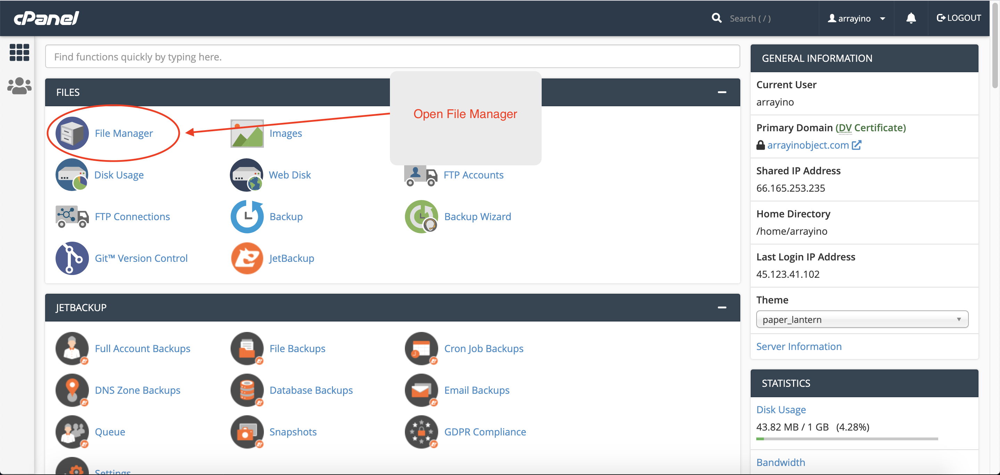
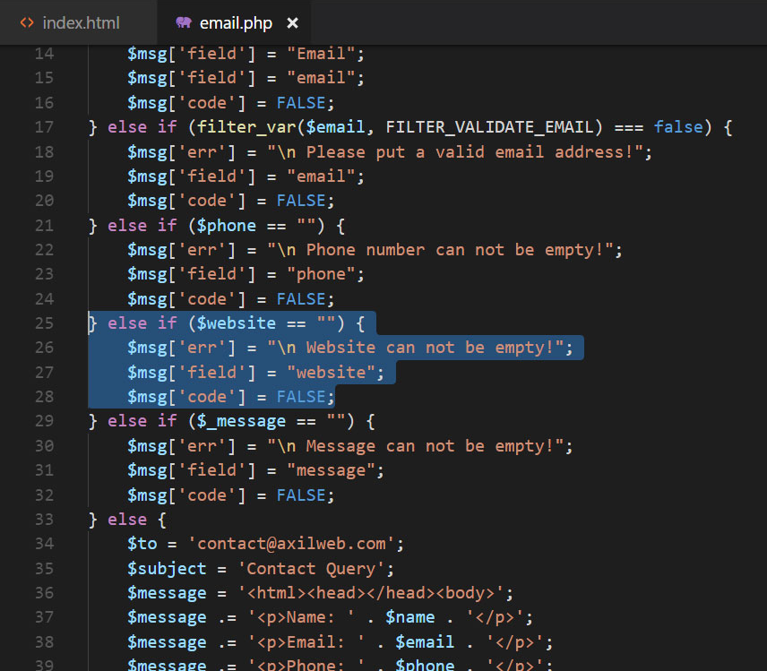

SEO Tropica is an SEO template for SEO agencies and digital marketing agencies.
Your digital marketing company needs a functional website to deliver your messages to your
target customers in such a way that aligns with your business goals. Our SEO template will get
you covered.
All the contents of this SEO template are created based on real market and customer research.
Purchase our SEO template, replace the images, replace the contents, and you are good to go. We
built this template with love and care to help you build your business and become a part of the
growing digital industry. Best of luck!
Installation
To use this template as your website you need to upload the files to the server. To do so
please go through the following steps:
Unzip the .zip file that you have downlaoded from the ThemeForest products page. You will
get two different folders. One is for the documentation and the other one contains all the
files for the tamplate called "Tropica". If the "Tropica" folder is already compressed(.zip)
file, then you are ready to go. If not please open the folder, press CTRL+A for windows pc
or CMD+A for mac to select all the files and compress them. You will find the compress
option when you right-click your mouse.
Now login to the cPanel of your website.
Go to file Manager

Double-click on Public_html folder to go inside.
This is the root folder of your website. Click the upload button as shown in the image below
to upload files inside the root folder.
You can also creare folder and subfolders and upload the files inside them.
Drag the .zip file you just made in step:1 and drop it inside the dashed-bordered area. Or
you can click on the Select File button to upload the
.zip file. Once the file is done uploading you can now go back to root folder(Public_html).
You are ready to go now! You may now want to browse your site url to test your
website.
HTML Structure
This template has fixed layout with
four columns. The main contents are inside the 'body' tag divided into nine 'sections'(i.e.
header, banner, services,... footer etc.). The general template structure is the same
throughout the template. Here is the general structure.
If you would like to edit the color, font, or style of any particular elements, you would first
copy the 'id' or 'class' of that element and go to the main.css file. Then you need to find the
particular 'id' or 'class' of that element and make the changes you need.
Example-1:: Suppose you want to change the color of all
the content headings of a section called#services. Do the
following:
.content h3{
color: #samplecolorcode;
}
Example-2:
Suppose you want to change the background-color of the
image overlay of a section called #projects Do
the following:
If you find that your new style is not
overwriting, it is most likely because of a specificity problem. Scroll down in your CSS
file and make sure that there isn't a similar style that has more weight. See below:
#services .content a {
color: #samplecolorcode;
}
So, to ensure that your new styles are applied, make sure
that they carry enough "weight" and that there isn't a style lower in the CSS file
that is being applied after yours. You can also force your changes to happen by
applying !important after the value of the
particular property. See below:
.content a {
color: #someColor!important;
}
CSS Files and Structure
We are using two custom css files (main.css, responsive.css) . We have
bootstrap.min.css file
as a css framework and several
plugins.
The first one (main.css) is the main
custom css file which contains all of the specific styling for all the pages. The file is
separated into sections like the following structure:
The second one is a media query file
(responsive.css) to make the webpage fit for any devices. The structure of this file is as
same as the main.css file displayed above.
If you would like to edit a specific
section of the site, simply go to the main.css file and find the instructions at the top of
the each section.
JavaScript Files
This template has three Javascript files.
jQuery library
Third-party plugins
Our custom scripts (main.js)
jQuery is a Javascript library that greatly reduces the
amount of code you require to write.
Change Brand Logo
To change the logo do the following steps:
Open the folder called images
Find the .png file called brand-logo.png
Replace the file with your own brand logo
Make sure that the file name does not change. The file
name should be the same.
Note: Images seen in the live preview are only set
for preview purposes. They are not included in the download files.
Change Images
Process: 1
To change any images of the website
Carefully collect the source name of the image (i.e.,
banner-img.jpg).
Open the folder called images.
Find the particular image file.
Replace the file with your image.
Make sure that the file name does not change. The file
name should be the same.
Example: : Suppose you want to
change the following image file:
You have to do the following to change this image with your
own image:
Open the folder called images.
Find the particular image file called
banner-img.jpg.
Replace the file with your image.
Make sure that the file name does not
change.
Process: 2
Paste your image in image folder
Open the file where you want to show your image.
Go to the particular line and change the name of the
image in code. It will find the image inside your folder.
Note: Images seen in the live preview are only set
for preview purposes. They are not included in the download files.
Change Colors
How to change colors from SASS(.scss) files:
You can easily change the colors from the SASS(.scss) files.
All the common colors are defined as variables in _variable.scss file in the sass folder. Change any color
defined in the variables and compile the main.scss and responsive.scss files with a
compiler(prepros, koala, compass etc). Have a look at the image bellow to see the file
format.
If you need to change the color of any particular content of
a particular page please open the .scss file named similar to the page and modify or rewrite
the code. Suppose you want to change any color of any content from the about.html page. You will find a
file called _about.scss in the
sassfolder. You can modify or
rewrite any code or code-blocks from that file to change the look of the about.html page. Compiling that
file with a compiler will merge your newly written code in the main.cssfile and you will get
your new styles. Have look at the image below for a visual description:
How to change colors from CSS files:
Please note that if you
want to modify or rewrite the code of any css file, do not compile the sass files as
compiling sass files will erase all the newly written code in the css
files.
If you would like to edit the color any particular elements
from the css files , you would first copy the 'id' or 'class' of that element and go to the
main.css file. Then you need to find the particular 'id' or 'class' of that element and make
the changes you need.
Suppose you want to change the color of all the content
headings of a section called #services. Do the following:
#services .content h3{
color: #samplecolorcode;
}
If you find that your new style is not
overwriting, it is most likely because of a specificity problem. Scroll down in your CSS
file and make sure that there isn't a similar style that has more weight. See below:
#services .content a {
color: #samplecolorcode;
}
So, to ensure that your
new styles are applied, make sure that they carry enough "weight" and that
there isn't a style lower in the CSS file that is being applied after yours. You can
also force your changes to happen by applying !important after the value of the
particular property. See
below:
content a {
color: #someColor!important;
}
Contact Form
Change Email Addresses that Receive the
Notification
Go to Script folder.
Open email.php.
Go to line number 48.
Follow instructions in image below:
For 'Apply for a Job' form change the following
fields:
Modify required/non required status
of any field
Open the folder named email.php. You will find the file inside the "scripts"
folder.
Remove the code block for a particular input type.
Suppose you want to make the "website" field not-required. For this you should
copy the particular code block as stated in the screenshot, remove them and save.
Now upload the file to the server and you are ready to go.

Change Icons
To change Caviar icons:
Open the folder called "tropica-caviar-icons",
then open demo.html file in a browser. Brows throw the page to find your required
icon.
Copy the name of the icon as shown the following
image:
Find the class name of the icon that you want to change
from the html file. You can find out the name of the icon using browser console.
Either click on an icon from the list or search for the particular icon and click on
it.
Clicking a particular icon will lead to the following page where your will find the class
name for that icon.
Find the class name of the icon that you want to change
from the html file. You can find out the name of the icon using browser console.
Replace the class name with the new one.
Our Work / Case Studies
Note: this instruction is applicable for both home page and portfolio
page.
To add a
new item in our-work or case-studies section, do the
following:
Open our-work.html or case-studies.html file with a text editor.
Go to the section called 'work-sample' in our-work.html or
'case-studies' section in
case-studies.html.
Copy and paste the code block (as shown in the following images) under all the existing
blocks of code to add more items or, remove a code block to remove an item
Change Your Location on Google Map
To change your location on google map please do the following:
Click on the top-left menu-bar and then click on "share or embed
map"
Click on 'Embed map' and copy only the source inside the double quote of the 'src'
attribute.
Open contact.html file with a text editor and search for 'iframe'. Now replace the text
inside the 'src' attribute with
the text you have coppied from the google maps website.
Save the file and you are ready to go.
Disable Page Loader
Follow any of the processes below to disable page loader:
Process: 1
If you want to customize the css file then open the main.css file from css folder and search for and .loader_wrapper set the selector to
display:none!important;
Note: Do not compile the sass(.scss) files if you
customize the css file as it will erase the newly added css file.
Process: 2
To remove the page loader open the _base.scss file from the sass folder and search for .loader_wrapper . Now set the
selector to display:none!important; and then
compilethe file with a sass compiler.
Sources and Credits
We've used the following fonts, free icons and plugins as
listed:
Font: Vesper Libre, Roboto (Google font)
Icon fonts: http://fontawesome.io/ (free) and Caviar Icons (premium, files
added with the template)
If you find any bugs in our template, please contact us via
ThemeForest Support. If you have any general question relating to the template on
ThemeForest, you might consider visiting the forum and asking your question in the
"Item Discussion" section.
Support
Included in Free Support Scope:
Fixing bugs
Helping clients in changing site contents by sending
instructions that couldn’t be covered by documentation
NOT Included in Free
Support Scope:
Any type of custom changes
Any type of request to update clients’ site contents